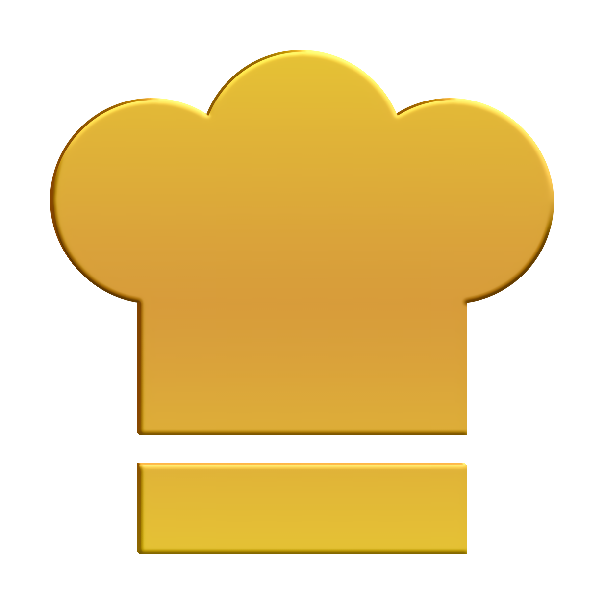
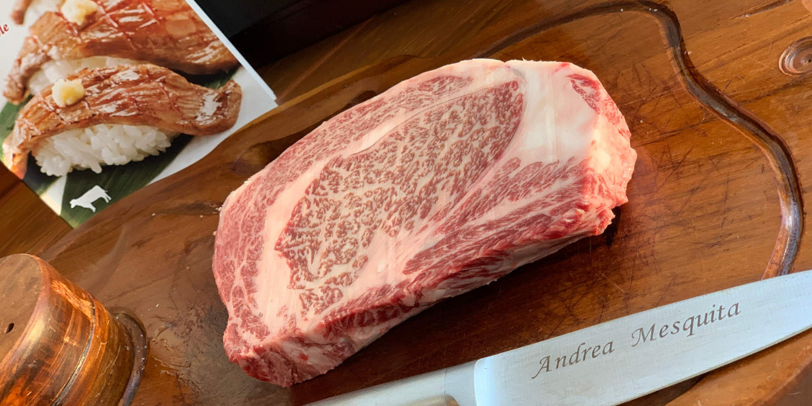

Chef Pavan aqui para Você!
O renomado Chef de cozinha Caique Pavan iniciou um novo serviço de atendimento exclusivo onde o cliente reserva um dia e durante o almoço ou o jantar será servido pelo grande chef, com um cardapio a sua escolha indo desde um belo American Barbecue com seus pratos defumados até a culinaria Japonesa recheada de peixes, legumes e carnes deliciosas.
Premios e Reconhecimentos
-

Melhor Chef de São Paulo
Revista Veja 2015
-
Premio Lugares para Comer
Revista Eatin'Out 2018
-
Melhor comida Francesa fora da França
Revista l’Auberge de l’Eridan 2005
-
Barbecue Master
Barbecue magazine 2016
-
Mestre do Sushi
Revista Veja 2019
-
Premio Filho da Italia
Ragazzo del sud 2020
Agende o melhor dia culinario da sua vida!
O chef irá recebelo em um ambiente exclusivo para até 6 pessoas no centro de Campinas-SP; Os ingredientes são da melhor qualidade escolhidos pelo chef em pessoa. Todas as carnes são de produtores renomados e com selo A5 de procedencia.